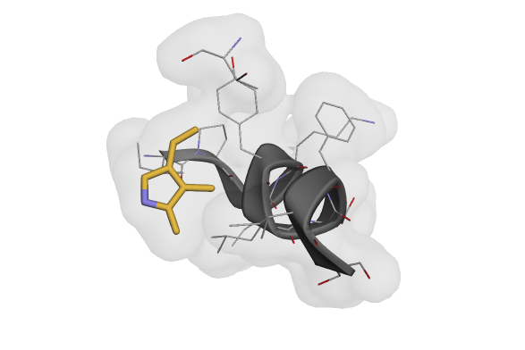

Note
Go to the end to download the full example code.
Dataset Exploration and Management in AtomWorks#
This example demonstrates how to work with datasets in AtomWorks, from simple file-based datasets to complex tabular datasets with custom loaders and transform pipelines.
Prerequisites: Familiarity with Loading and Visualizing Protein Structures for basic structure loading and Creating Custom Transforms: Ligand Pocket Conditioning for understanding transform pipelines.
{kind=link}

Visualization of a cropped structure after applying transform pipelines to a dataset.#
Overview#
Transform pipelines can be used with any data loader and any dataset. They are simply functions that take as input an AtomArray (which is often the output of AtomWorks.io) and output PyTorch tensors ready for ingestion by a model.
However, most users will not want to build datasets from scratch. For convenience, we provide pre-built datasets and dataloaders that play well with Transform pipelines as well, roughly adhering to Torchvision conventions.
We demonstrate below a couple of different ways to connect a Transform pipeline with arbitrary datasets and connect them with trivial Transform pipelines.
Datasets in AtomWorks#
Using a Folder of CIF/PDB Files as a Dataset#
The simplest way to use AtomWorks with a Dataset is to create a Dataset and Sampler pointed to a directory of structural files (e.g., PDB, CIF).
NOTE: All AtomWorks Datasets require a name attribute to support many of the logging/debugging features that are supplied out-of-the-box.
from atomworks.ml.datasets import FileDataset
# To setup the test pack, if not already, run `atomworks setup tests`
dataset = FileDataset.from_directory(
directory="../../tests/data/ml/af2_distillation/cif",
name="example_directory_dataset",
)
Let’s explore the dataset a tiny bit.
# Count the number of examples in the dataset
print(f"Dataset has {len(dataset)} examples.")
# Print the raw data of the first 5 examples
for i, example in enumerate(dataset):
if i >= 5:
break
print(f"Example {i + 1}: {example}")
Understanding Dataset Requirements#
At a high level, to train models with AtomWorks, we typically need a Dataset that:
Takes as input an item index and returns the corresponding example information; typically includes: a. Path to a structural file saved on disk (/path/to/dataset/my_dataset_0.cif) b. Additional item-specific metadata (e.g., class labels)
Pre-loads structural information from the returned example into an AtomArray and assembles inputs for the Transform pipeline
Feed the input dictionary through a Transform pipeline and returns the result
So far, the FileDataset we initialized only accomplishes (1) from above - returning the raw data.
To accomplish (2), we can additionally pass a loading function at dataset initialization that takes the raw example data as input and returns a pre-processed ready for a Transform pipeline.
In most cases, this will involve using parse or load_any from AtomWorks.io to build an AtomArray, which is the common language of our Transform library.
from typing import Any
from atomworks.io import parse
def simple_loading_fn(raw_data: Any) -> dict:
"""Simple loading function that parses structural data and returns an AtomArray."""
parse_output = parse(raw_data)
return {"atom_array": parse_output["assemblies"]["1"][0]}
dataset_with_loading_fn = FileDataset.from_directory(
directory="../../tests/data/pdb",
name="example_pdb_dataset",
loader=simple_loading_fn,
)
output = dataset_with_loading_fn[1]
print(f"Output AtomArray has {len(output['atom_array'])} atoms!")
Adding Transform Pipelines#
Next up is adding in a pipeline. Let’s create a simple one with a dramatic crop.
from atomworks.constants import STANDARD_AA
from atomworks.ml.transforms.atom_array import (
AddGlobalAtomIdAnnotation,
)
from atomworks.ml.transforms.atomize import AtomizeByCCDName
from atomworks.ml.transforms.base import Compose
from atomworks.ml.transforms.crop import (
CropSpatialLikeAF3,
)
pipe = Compose(
[
# (We need to add these transforms before we can crop)
AddGlobalAtomIdAnnotation(),
AtomizeByCCDName(atomize_by_default=True, res_names_to_ignore=STANDARD_AA),
# Crop to 20 tokens (which in this case is number amino acids/nucleic acid bases + number of small molecule atoms)
CropSpatialLikeAF3(crop_size=20),
],
track_rng_state=False,
)
Just like with the loading function, we can also pass a composed Transform pipeline to our datasets.
dataset_with_loading_fn_and_transforms = FileDataset.from_directory(
directory="../../tests/data/pdb",
name="example_pdb_dataset",
loader=simple_loading_fn,
transform=pipe,
)
Visualizing the Results#
Let’s visualize the result of our transform pipeline:
from atomworks.io.utils.visualize import view
pipeline_output = dataset_with_loading_fn_and_transforms[
0
] # This will trigger the loading function and print the row information
view(pipeline_output["atom_array"])
And indeed, we have a cropped example!
We will then sample uniformly (with or without replacement) from this dataset during training. Such a simple application may be appropriate for many fine-tuning cases such as distillation.
The only “gotcha” outside of normal PyTorch sampling is that you’ll need to implement a default collate function (which could simply be the identity) so long as your output dictionary contains an AtomArray.
from torch.utils.data import DataLoader, RandomSampler
sampler = RandomSampler(dataset_with_loading_fn_and_transforms)
loader = DataLoader(
dataset=dataset_with_loading_fn_and_transforms,
sampler=sampler,
collate_fn=lambda x: x, # Identity collate: returns the batch as-is
)
for i, example in enumerate(loader):
# (Since we now have a batch dimension, we need the extra indexing dimension)
print(f"Example: {i}, Length of AtomArray: {len(example[0]['atom_array'])}")
if i > 2:
break
For more complicated sampling strategies, including distributed sampling for multi-GPU training, see the API documentation for samplers.py, and the tests in test_samplers.py
Tabular Datasets#
So far, we have seen how to make and use simple datasets with just paths. In many applications, however, we may want more nuanced dataset schemes. For example, when training on the PDB, we typically want to sample at the chain or interface-level rather than the entry-level (since we are cropping, the two are distinct). We may also want to provide additional information other than the raw CIF file (e.g., class labels) to be used by the model during training.
We thus support instantiating datasets from tabular sources stored on disk.
We have implemented a PandasDataset class for this purpose; however, any tabular format (e.g., PolarsDataset) could be similarly implemented without difficulty should the need arise (PR’s welcome!)
PandasDataset#
The PandasDataset class requires a couple of arguments: - data: Either a pandas DataFrame or path to a CSV/Parquet file containing the tabular data. Each row represents one example. - name: Descriptive name for this dataset, just as in FileDataset and all AtomWorks Dataset classes. Used for debugging and some downstream functions when using nested datasets.
Again, we can also pass a transform pipeline and loader: - transform: Transform pipeline to apply to loaded data. - loader: Optional function to process raw DataFrame rows into Transform-ready format.
There’s also a few other PandasDataset-specific arguments to note: - filters: Optional list of pandas query strings to filter the data. Applied in order during initialization. - columns_to_load: Optional list of column names to load when reading from a file. If None, all columns are loaded. Can dramatically reduce memory usage and load time if loading from a columnar format like Parquet.
We will start by exploring an example metadata dataframe, then load it into a PandasDataset.
from atomworks.ml.utils.io import read_parquet_with_metadata
interfaces_metadata_parquet_path = "../../tests/data/ml/pdb_interfaces/metadata.parquet"
interfaces_df = read_parquet_with_metadata(interfaces_metadata_parquet_path)
print("DataFrame shape:", interfaces_df.shape)
print("Columns:", list(interfaces_df.columns))
print("\nFirst few rows:")
print(interfaces_df.head())
Understanding the Metadata#
This dataframe includes a row for every interface between two pn_units (essentially, chains) in the Protein Data Bank. For illustration purposes, however, we’re loading the test dataframe, which only includes information for a small subset of the full PDB.
The complete dataframes can be downloaded with atomworks setup metadata and will be described in greater detail elsewhere in the documentation.
For our purposes, note that we have a path column that points to a .cif file stored on disk, an example_id column which is unique across every row in the dataset, and two columns pn_unit_1_iid and pn_unit_2_iid that specify the interface of interest for this particular row.
NOTE: Because a given PDB ID may contain many interfaces and thus may appear multiple times in our dataset, we must also incorporate the assembly_id and the pn_unit_iids of the two interacting chains within the example_id.
from atomworks.ml.datasets import PandasDataset
from atomworks.ml.datasets.loaders import create_loader_with_query_pn_units
dataset = PandasDataset(
data=interfaces_df,
name="interfaces_dataset",
# We use a pre-built loader that takes in a list of column names and returns a loader function
loader=create_loader_with_query_pn_units(pn_unit_iid_colnames=["pn_unit_1_iid", "pn_unit_2_iid"]),
transform=pipe,
)
print(f"Created PandasDataset with {len(dataset)} examples")